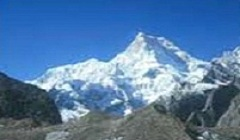

Glaciers are basically made up of fallen snow which over the years compresses into large thickened masses of ice which have an ability to move , albiet very slowly. Uttarakhand is home to many glaciers , 9 major ones in the Garhwal Region and 7 major ones in the Kumaon Region. Some Glaciers also have a mythological angle attached to it like the Chorbari Bamak Glacier where it is believed that Lord Shiva passed on his knowledge to human beings or the Bandarpunch Glacier , where legend states that Lord Hanuman sat with his tail spread out from Hanuman Chatti to Banderpunch. Two of India's biggest and most famous rivers, the Ganga and the Yamuna originate in the glaciers of Uttarakhand.
Bandar Poonch Glacier
Bandarpoonch is an exquisite peak in the Western Himalayas of North India. It stands at the western edge of the High Himalayan Range where it turns northwest at an altitude of 6316 mtr and is easily accessible with a scenic three-day hike. The Southwest ridge offers a route of moderate difficulty with little technical climbing.
Gangotri Glacier
Gangotri glacier is located in the district of Uttarkashi in the hill state of Uttarakhand. It is one of the most important glaciers in Garhwal region as it is responsible for feeding the head stream of the holy river Ganga. Gangotri glacier originates at the northern slope of Chaukhamba range. It extends to about 28 Km before terminating at Gaumukh which is 4,000 meters above the sea level. It is here at Gaumukh (meaning "Mouth of a Cow") that the head stream of Ganga begins to flow.
Khatling Glacier
 This lateral glacier situated in Tehri district is the source of river Bhilangna. The glacier is surrounded by snow peaks of the Jogin group (6466 m), Sphetic Pristwar (6905 m), Barte Kauter (6579 m), Kirti Stambh (6902 m) and Meru. The moraines on the side of the glaciers look like standing walls of gravel mud.
This lateral glacier situated in Tehri district is the source of river Bhilangna. The glacier is surrounded by snow peaks of the Jogin group (6466 m), Sphetic Pristwar (6905 m), Barte Kauter (6579 m), Kirti Stambh (6902 m) and Meru. The moraines on the side of the glaciers look like standing walls of gravel mud.
Doonagiri Glacier
 Dunagiri Glacier is one of the important glacier of Dhauli Ganga system of glaciers, where more than 500 glaciers, The magical land of Uttarakhand in India is a treasure house of natural splendor and divine beauty. Words fail to describe the charisma and enchanting beauty of this north Indian state, replete with magnificent glaciers, snow-capped mountains, gigantic peaks, enchanting valleys, skiing slopes and dense forests. There are innumerable tourist destinations in Uttarakhand and the Glaciers are among the major attractions of the region. Dunagiri Glacier is one of the important glaciers in Uttarakhand.
Milam Glacier
Situated on the south facing slope of the main Himalayan range is the 16 km long, Milam Glacier. It originates from the slope of Kohli and Trishul peaks. It acts as the source for the Milam river and a tributary of the Pindar River.
Pindari Glacier
The Kumaon region in the State of Uttarakhand has unimaginable natural beauty waiting to be discovered! The Himalayan ecology is well conserved here and offers a great retreat for all nature lovers. The trek to the Pindari Glacier is amongst the most favorite of treks in the Kumaon region of the Himalayas. The trail takes you through some of the most spectacular landscape one can ever hope to see. The traditional, remote villages make for a special attraction for any visitor. At the final destination, the Pindari Glacier, one is rewarded with a view that will remain etched in the mind for life!
Sunderdhunga Glacier
Sunderdhunga literally means valley of beautiful stones. Sunderdhunga glacier is situated in the district of Bageshwar within the hill state of Uttarakhand in India. Other famous glaciers of Sunderdhunga valley are Maiktoli Glacier (6, 804 m) and Sukhram glacier and main peaks are Tharkot (6, 100 m), Mrigthuni (6,856 m), Maiktoli (6, 804 m) and Pawali Dwar (6, 663 m).
Kafni Glacier
Kafni glacier is situated on the left side of pindar valley under majestic mountain Nandakot. This region has its own charm with the solitude it presents. This region is very rich in wildlife. There are no rest houses beyond Dwali and one has to spend nights in tents or caves. Main peaks near the glacier are Nandakot 6860 meters.
Ralam Glacier
Ralam is a beautiful glacier located in Munsiyari tehsil of Pithoragarh district within Kumaon region of the hill state of Uttarakhand in India. This magnificent glacier is situated at an elevation of 2, 290 meters above the sea level near Ralam Dhura at Ralam Khal.
Namik Glacier
The word 'Namik' means a place where saline water springs are present. Namik is a fascinating glacier cradled in the pristine environs of Kumaon Himalayas, within the district of Pithoragarh in the hill state of Uttarakhand in India. The Namik glacier trek is situated on Kumaon Himalayas at an attitude of 3,600 meters. It is 40 km from Munsiyari and situated at the villages of Gogina and Namik.